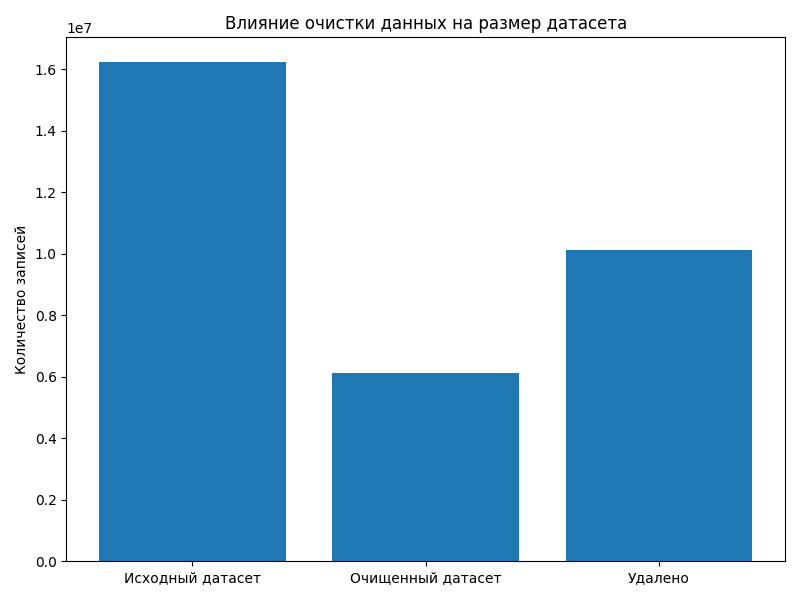
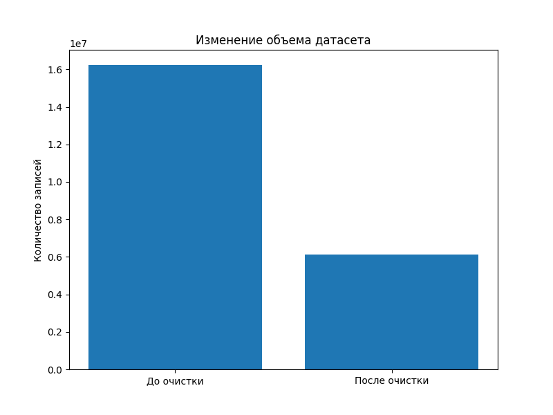
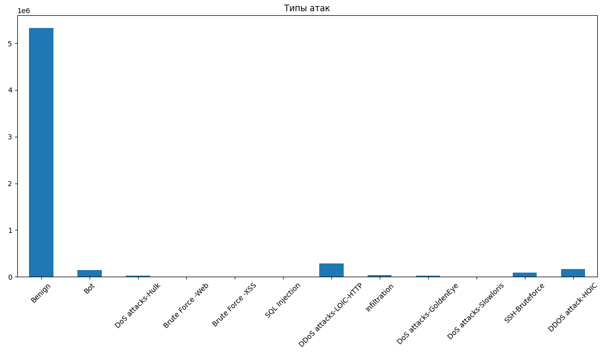
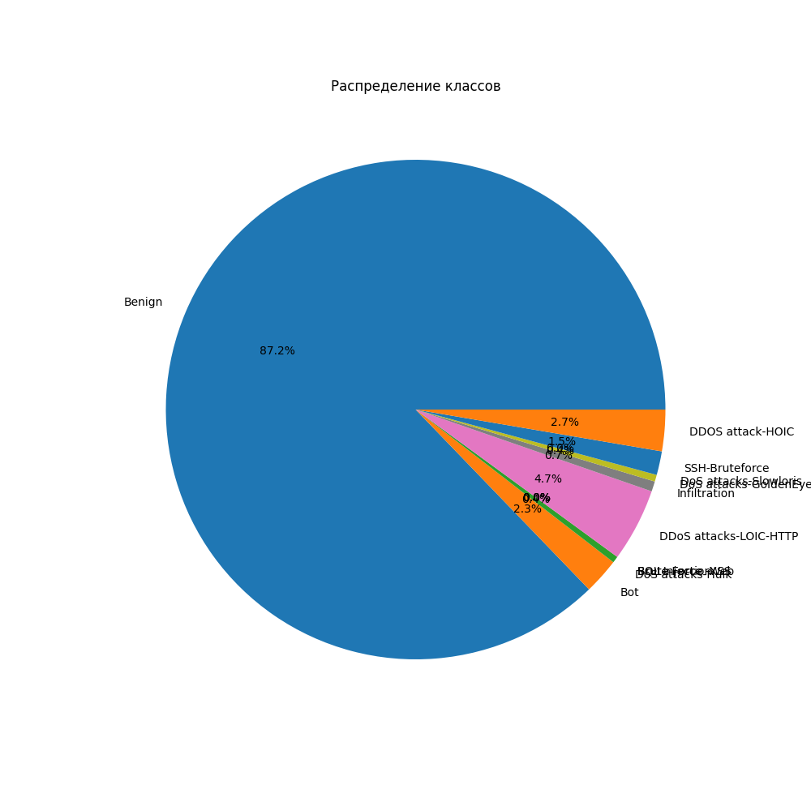
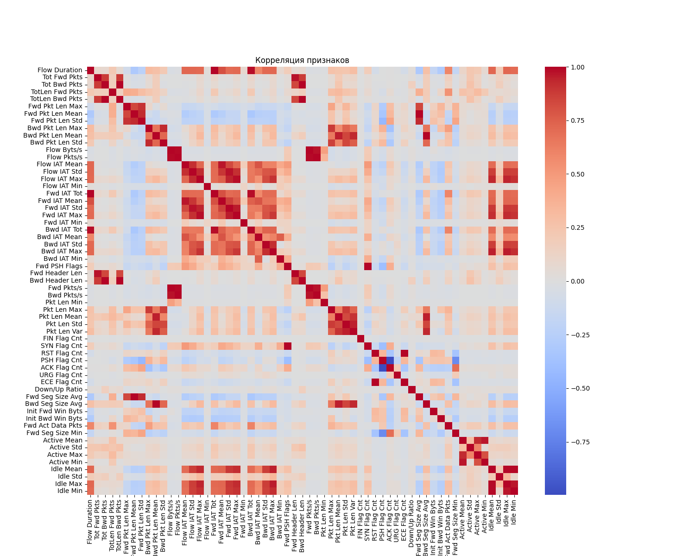

Графики
Visualization of dataset analysis results
In the course of the work, graphs were constructed reflecting the data structure, the quality of the dataset, and the distribution of network traffic.
1. The impact of data cleanup on dataset size

This graph shows the change in the number of records after completing the preprocessing stage.
Interpretation:
- the first column reflects the initial number of network flows;
- the second column shows the amount of data after deleting incorrect values;
- the third indicator shows the volume of deleted records.
Deletion is due to: - missing values (NaN); - infinite values (inf); - incorrect or corrupted lines.
Output:
Clearing the data reduces the volume of the dataset, but increases its quality and suitability for further analysis and model training.
2. Comparing the amount of data before and after the cleanup

The graph shows the total number of records in the original and processed datasets.
Interpretation:
- the first column is the source dataset with the raw data;
- the second column is the dataset after preprocessing;
- the difference between the values reflects the number of deleted rows.
Output:
The difference confirms the presence of noisy and incorrect data, which must be deleted before training machine learning models.
3. Distribution of network attack types

The graph shows the distribution of network traffic classes, including normal connections and various types of attacks.
Interpretation:
- normal traffic makes up the bulk of the data;
- attacking events are represented by a smaller proportion;
- Different types of attacks are unevenly distributed.
Output:
There is a pronounced class imbalance, which is a critical factor in model training, as it can lead to a bias towards the dominant class.
4. Class distribution (pie chart)

The pie chart shows the percentage of normal and malicious traffic.
Interpretation:
- about 87% of the data is related to normal traffic;
- about 13% relate to attacks;
- the strong predominance of one class is confirmed.
Output:
Class imbalance requires the use of data balancing methods (SMOTE, undersampling, class weights) or the use of metrics that are resistant to imbalance (F1-score, Recall).
5. Correlation of features

The graph shows the degree of relationship between the numerical features of the dataset.
Interpretation:
- light and dark areas show strong correlations between the signs;
- some of the signs have a high correlation, which indicates the redundancy of information;
- some signs are practically unrelated.
Output:
The presence of a strong correlation between features can lead to multicollinearity, which negatively affects some machine learning models (for example, linear models).
General visualization conclusion
The constructed graphs allow us to draw the following conclusions:
- the dataset contains a significant amount of noise data;
- cleaning significantly reduces the size of the data, but improves its quality;
- there is a pronounced class imbalance;
- there is a high correlation between some of the features.
Taken together, this confirms the need for careful data preprocessing before building machine learning models.